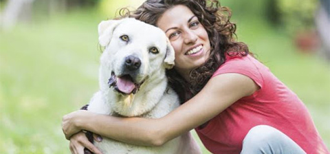

Objetivos
Contribuir a la disminución del maltrato animal al promocionar el amor, la empatía y protección hacia los mismos, principalmente a los perros, debido a ser una de las especies más expuesta a ese acto lamentable; brindando las mejores condiciones en nuestro club-médico para mantener tanto a perros como a seres humanos estables y tranquilos además de la mejor atención médica veterinaria garantizada del país.
